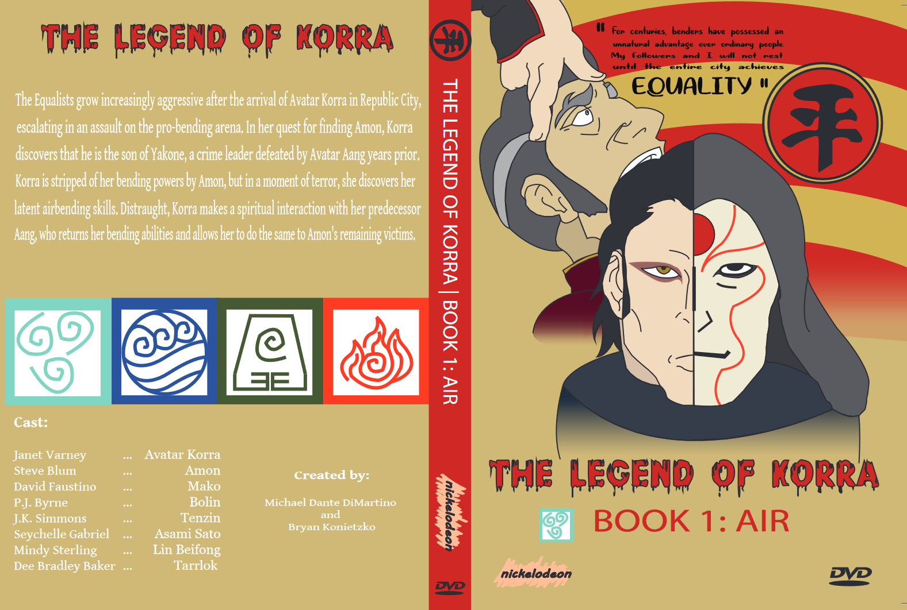

Legend of Korra Poster & DVD Cover
Graphic Arts & Design

My first assignment working with Adobe Illusrator was to create a poster and DVD cover that was related to a specific theme. For my task, I chose the theme of equality and the Nickelodeon animated show, 'Legend of Korra'.
All four seasons of this show covered some form of extreme ideologies on equality, namely communism, theocracy, anarchism, and fascism. Therefore, I concluded that it was quite fitting with the theme. I personally also love the show, so this choice gave me the benefit of working with famliliar characters.
After some thought, I opted to focus only on one season to keep the work load simpler and easier - considering this was my first time doing anything of this sort. I started with a moodboard of the main topics, events and characters in season one.

The most important character is the antagonist as he is the first and most feared villain for Avatar Korra, the one responsible for bringing and keeping peace. Amon, formally named Noatak, was a waterbender-turned-bloodbender who manipulated non-benders into rallying against benders. He instigated fear, lack of mercy, and divide amongst the people of Republic City - a former colony land that symbolises harmony between nations. Amon's most powerful skill was to 'equalise' people by taking their bending away. He also has an army of Equalisists who use electric shocks to take down their opponents.
Korra, initially overly confident and ambitious, eventually feared Amon as well until she exposed his true identity as a waterbender - not a victim of firebending, as his scars are fake. This led to Amon losing his power over the general public and escaped with his estranged brother before they died of a suicide bomb on their boat.
This sums up the repurcussions that come with communism: deception, fear, divide, and corruption. I wanted to capture all of this in my poster and DVD cover, as I believe that the original designs are more focused on Korra and Team Avatar.
I started the design by sketching out the poster using the traditional paper and pencil. This benefited me because I had no digital drawing skills and I could see the poster in front of me on paper like it would be once printed. Once satisfied with the sketch, the sketch was scanned and transferred onto Adobe Illustrator.


I created a new layer under of the sketch and simply used the Pen Tool to trace over the drawing before adding a fill colour. Some adjustments were made, such as not including Avatar Korra in the poster as it was going to make the poster chaotic. I then searched for the appropriate typefaces to use for the text and the logo. The typeface on the logo was deemed appropriate because Amon was a bloodbender. The finishing touches included adding a background colour and a striped graphic that resembles the communist aesthetic.
The same process was done to create the DVD cover. All four elements (Air, Water, Earth, and Fire) were placed on the backside. The symbols were inspired, albeit not copied, from the original designs that appear in the show. I also made sure to use crop marks and bleeds for both designs.

The research conducted on the topic of Equality was impressive, despite it not being on the agreed list of Theme Options. As per the brief, the chosen theme of Equality was reflected well in the research.
Your work has been exceptional, and I am pleased with the progress you have made. Keep up the excellent work, and well done!
Ensure that the text is not stretched, and that the icon lines are drawn correctly.